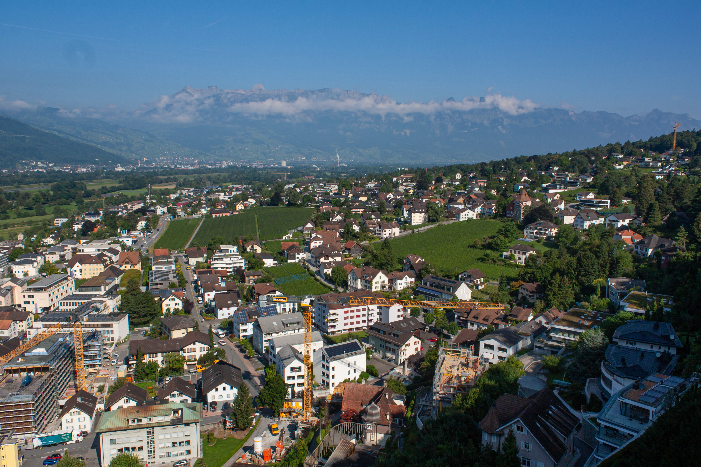

Vaduz es una capital muy pequeña, de unos 5.700 habitantes, y ni siquiera es el municipio más poblado del país, ya que Schaan la supera. Está en la margen oriental del Rin, al pie de los Alpes, y sobre ella se alza el castillo de Vaduz, residencia de la familia principesca, que no se puede visitar por dentro. La ciudad aparece citada desde la Edad Media, y el castillo está documentado desde el siglo XII. El centro urbano gira en torno a la calle peatonal Städtle, donde hay tiendas, cafés, edificios oficiales y varias esculturas al aire libre. Allí están el Parlamento, de arquitectura moderna, y el ayuntamiento. La catedral de San Florín, neogótica, data de 1873. La ciudad concentra buena parte de la vida cultural del país, con el Kunstmuseum Liechtenstein, dedicado al arte moderno y contemporáneo, el Museo Nacional y el Museo Postal, importante por la fama de los sellos del país. En las laderas sobre la ciudad se cultiva vid, y la bodega del príncipe, la Hofkellerei, produce vinos con prestigio local. Vaduz es también sede de muchos bancos y empresas de servicios financieros, a pesar de su tamaño. Se puede recorrer a pie en pocas horas y es un buen punto de partida para las rutas de montaña
